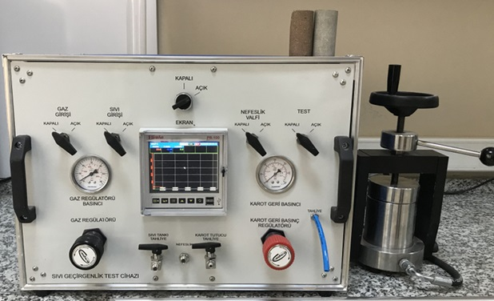
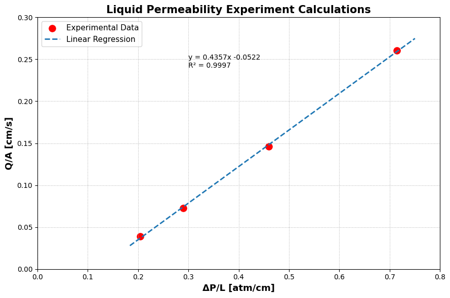

Liquid Permeability Measurement#
Gas Porosimeter Calibration Curve & Porosity Calculation
{kind=link}

Fig. 2 Liquid Permeameter#
Liquid Permeability Experiment Calculations Code written by Sukru Merey 17/05/2026
Details#
The permeability of the selected core plug sample was measured using a liquid permeameter.
The core plug was fully saturated with water (100% saturation). Low flow rates were intentionally selected to ensure that the flow conditions remained within the Darcy flow regime.
import numpy as np
import matplotlib.pyplot as plt
from scipy.stats import linregress
# -----------------------------
# CORE DATA
# -----------------------------
L = 5.800 # Core length, cm
D = 3.700 # Core diameter, cm
mu = 1.0 # Liquid (water) viscosity, cp
# Cross-sectional area
A = np.pi * (D**2) / 4
print("="*60)
print("LIQUID PERMEABILITY EXPERIMENT CALCULATIONS")
print("="*60)
print(f"\nCore Length = {L:.3f} cm")
print(f"Core Diameter = {D:.3f} cm")
print(f"Core Area = {A:.3f} cm²")
print(f"Liquid Viscosity = {mu:.2f} cp")
# -----------------------------
# EXPERIMENTAL DATA
# -----------------------------
# Inlet pressure (bar-g)
P1_bar = np.array([1.2, 1.7, 2.7, 4.2])
# Outlet pressure (bar-g)
P2_bar = np.array([0.0, 0.0, 0.0, 0.0])
# Produced liquid volume (cm³)
V = np.array([50.0, 50.0, 50.0, 50.0])
# Flow time (sec)
t = np.array([120.0, 64.0, 31.79, 17.86])
# -----------------------------
# UNIT CONVERSIONS
# -----------------------------
# Convert pressure from bar-g to atm
P1_atm = P1_bar * 0.987 + 1.0
P2_atm = P2_bar * 0.987 + 1.0
# Pressure drop
deltaP = P1_atm - P2_atm
# Pressure gradient
deltaP_over_L = deltaP / L
# Flow rate
Q = V / t
# Darcy velocity
Q_over_A = Q / A
# -----------------------------
# LINEAR REGRESSION
# Darcy Equation:
# Q/A = (k/μ) × (ΔP/L)
# -----------------------------
slope, intercept, r_value, p_value, std_err = linregress(
deltaP_over_L,
Q_over_A
)
# Permeability calculation
# Since viscosity = 1 cp:
# k = slope × 1000
# (Darcy → milliDarcy)
k_mD = slope * 1000
# -----------------------------
# RESULTS
# -----------------------------
print("\n" + "="*60)
print("EXPERIMENTAL RESULTS")
print("="*60)
for i in range(len(P1_bar)):
print(f"\nExperiment #{i+1}")
print(f"P1 = {P1_bar[i]:.3f} bar-g")
print(f"P1 = {P1_atm[i]:.3f} atm")
print(f"Q = {Q[i]:.3f} cm³/sec")
print(f"Q/A = {Q_over_A[i]:.3f} cm/sec")
print(f"ΔP/L = {deltaP_over_L[i]:.3f} atm/cm")
print("\n" + "="*60)
print(f"\033[1mk/μ = {slope:.4f}\033[0m")
print(f"\033[1mLiquid Permeability (kₗ) = {k_mD:.3f} mD\033[0m")
print(f"\033[1mR² = {r_value**2:.4f}\033[0m")
print("="*60)
# -----------------------------
# PLOT
# -----------------------------
plt.figure(figsize=(9,6))
# Experimental data points
plt.scatter(
deltaP_over_L,
Q_over_A,
c="r",
s=90,
label='Experimental Data'
)
# Regression line
x_line = np.linspace(
min(deltaP_over_L)*0.9,
max(deltaP_over_L)*1.05,
100
)
y_line = slope * x_line + intercept
plt.plot(
x_line,
y_line,
linestyle='--',
linewidth=2,
label='Linear Regression'
)
# Equation text
eq_text = (
f"y = {slope:.4f}x "
f"{intercept:+.4f}\n"
f"R² = {r_value**2:.4f}"
)
plt.text(
0.30,
0.24,
eq_text,
fontsize=10
)
# Axis labels
plt.xlabel(
"ΔP/L [atm/cm]",
fontsize=13,
fontweight="bold"
)
plt.ylabel(
"Q/A [cm/s]",
fontsize=13,
fontweight="bold"
)
# Title
plt.title(
"Liquid Permeability Experiment Calculations",
fontsize=15,
fontweight='bold'
)
# Legend
plt.legend(fontsize=11)
# Grid
plt.grid(True, linestyle=':')
# Axis limits
plt.xlim(0.0, 0.8)
plt.ylim(0.0, 0.30)
plt.tight_layout()
plt.show()
============================================================
LIQUID PERMEABILITY EXPERIMENT CALCULATIONS
============================================================
Core Length = 5.800 cm
Core Diameter = 3.700 cm
Core Area = 10.752 cm²
Liquid Viscosity = 1.00 cp
============================================================
EXPERIMENTAL RESULTS
============================================================
Experiment #1
P1 = 1.200 bar-g
P1 = 2.184 atm
Q = 0.417 cm³/sec
Q/A = 0.039 cm/sec
ΔP/L = 0.204 atm/cm
Experiment #2
P1 = 1.700 bar-g
P1 = 2.678 atm
Q = 0.781 cm³/sec
Q/A = 0.073 cm/sec
ΔP/L = 0.289 atm/cm
Experiment #3
P1 = 2.700 bar-g
P1 = 3.665 atm
Q = 1.573 cm³/sec
Q/A = 0.146 cm/sec
ΔP/L = 0.459 atm/cm
Experiment #4
P1 = 4.200 bar-g
P1 = 5.145 atm
Q = 2.800 cm³/sec
Q/A = 0.260 cm/sec
ΔP/L = 0.715 atm/cm
============================================================
k/μ = 0.4357
Liquid Permeability (kₗ) = 435.734 mD
R² = 0.9997
============================================================
